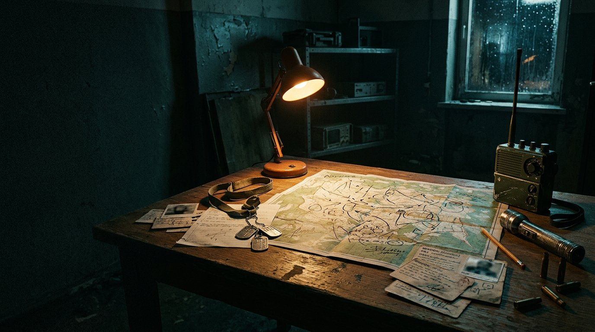

INDEX / PROGRESSION
Choisissez le mode avant le prochain raid
Les tâches sont importées séparément pour PvP permanent, PvE Zone et PvP Seasonal; les listes et prérequis divergent.
Comptage des snapshots : PvP permanent : 503 tâches · PvE Zone : 499 tâches · PvP Seasonal : 462 tâches. Les noms français sont disponibles pour les tâches renvoyées par les trois réponses.

01 Recherche
Filtrer les tâches de l’export
La recherche couvre le nom, le trader, la carte et l’identifiant. Les filtres ne font pas apparaître les tâches absentes de la source.
Snapshot regular · 60 premières tâches affichées.
| Tâche | Trader | Niveau | Carte(s) | Repères exportés | Progression |
|---|---|---|---|---|---|
| A Big LossA Big Loss | Ragman | 0 | Interchange | 2 objectifs | Suivi local disponible avec JavaScript. |
| A Difficult ChoiceA Difficult Choice | La Toubib | 0 | Non renseignée | 1 prérequis7 objectifs | Suivi local disponible avec JavaScript. |
| A Wedge Between UsA Wedge Between Us | Jaeger | 0 | Icebreaker | 3 objectifs | Suivi local disponible avec JavaScript. |
| AgitationStirrup | Skier | 0 | Factory, Night Factory | 1 objectifs | Suivi local disponible avec JavaScript. |
| AkimboAkimbo | Ragman | 0 | Lighthouse | 2 objectifs | Suivi local disponible avec JavaScript. |
| All This Filth...All This Filth... | Jaeger | 0 | Interchange, Woods, Ground Zero 21+, Ground Zero Tutorial, Ground Zero, Customs | 1 objectifs | Suivi local disponible avec JavaScript. |
| Amateur de balletBallet Lover | Ragman | 0 | Streets of Tarkov | 2 objectifs | Suivi local disponible avec JavaScript. |
| Ami parmi les étrangersFriend Among Strangers | Fence | 0 | Non renseignée | 1 prérequis1 objectifs | Suivi local disponible avec JavaScript. |
| Analyse sensorielle - Partie 1Sensory Analysis - Part 1 | Ragman | 0 | Streets of Tarkov, Woods | 1 prérequis3 objectifs | Suivi local disponible avec JavaScript. |
| Analyse sensorielle - Partie 2Sensory Analysis - Part 2 | Conducteur du BTR | 0 | Non renseignée | 1 prérequis2 objectifs | Suivi local disponible avec JavaScript. |
| AnesthésieAnesthesia | Prapor | 0 | Shoreline | 3 objectifs | Suivi local disponible avec JavaScript. |
| Approvisionnement généralGeneral Wares | La Toubib | 0 | Non renseignée | 2 objectifs | Suivi local disponible avec JavaScript. |
| Argument de chocKiller Argument | Skier | 0 | Woods | 1 prérequis2 objectifs | Suivi local disponible avec JavaScript. |
| Arrête de chiperNo Swiping | Skier | 0 | Shoreline, Interchange | 1 objectifs | Suivi local disponible avec JavaScript. |
| Atome paisiblePeaceful Atom | Peacekeeper | 0 | Icebreaker | 1 prérequis2 objectifs | Suivi local disponible avec JavaScript. |
| Balayage nocturneNight Sweep | Skier | 0 | Ground Zero 21+, Customs, Night Factory, Shoreline, Woods | 3 objectifs | Suivi local disponible avec JavaScript. |
| Battery ChangeBattery Change | Conducteur du BTR | 0 | Non renseignée | 1 prérequis2 objectifs | Suivi local disponible avec JavaScript. |
| Belka et StrelkaBelka and Strelka | Prapor | 0 | Customs | 1 objectifs | Suivi local disponible avec JavaScript. |
| Bien choisir ses amisChoose Your Friends Wisely | Skier | 0 | Customs, Reserve, Woods, Lighthouse | 2 prérequis5 objectifs | Suivi local disponible avec JavaScript. |
| BiochimieBiochemistry | La Toubib | 0 | Icebreaker | 1 prérequis1 objectifs | Suivi local disponible avec JavaScript. |
| Bling-BlingGolden Swag | Skier | 0 | Customs | 3 objectifs | Suivi local disponible avec JavaScript. |
| Blood in the WaterBlood in the Water | La Toubib | 0 | Customs | 1 objectifs | Suivi local disponible avec JavaScript. |
| But et moyensGoals and Means | Le Mécano | 0 | Non renseignée | 1 objectifs | Suivi local disponible avec JavaScript. |
| Capture d'avant-postesCapturing Outposts | Prapor | 0 | Customs, Shoreline, Woods | 1 objectifs | Suivi local disponible avec JavaScript. |
| Cargaison abandonnéeAbandoned Cargo | La Toubib | 0 | Customs | 8 objectifs | Suivi local disponible avec JavaScript. |
| Cargo XCargo X | Peacekeeper | 0 | Shoreline | 2 objectifs | Suivi local disponible avec JavaScript. |
| Changement de batterieBattery Change | Conducteur du BTR | 0 | Non renseignée | 1 prérequis2 objectifs | Suivi local disponible avec JavaScript. |
| Chasse au tigreTigr Safari | Peacekeeper | 0 | Customs | 1 objectifs | Suivi local disponible avec JavaScript. |
| Chemical ExperimentsChemical Experiments | Peacekeeper | 0 | Customs | 1 objectifs | Suivi local disponible avec JavaScript. |
| Chimie - Partie 1Chemical - Part 1 | Skier | 0 | Customs | Kappa · export5 objectifs | Suivi local disponible avec JavaScript. |
| Chimie - Partie 2Chemical - Part 2 | Skier | 0 | Customs | Kappa · export1 prérequis4 objectifs | Suivi local disponible avec JavaScript. |
| ClaustrophobieClaustrophobia | Jaeger | 0 | Factory, Night Factory | 1 objectifs | Suivi local disponible avec JavaScript. |
| Club privéPrivate Club | Skier | 0 | Customs | 2 objectifs | Suivi local disponible avec JavaScript. |
| Communications spécialesSpecial Comms | Prapor | 0 | Woods, Reserve | 3 objectifs | Suivi local disponible avec JavaScript. |
| Connexions du NordConnections Up North | Skier | 0 | Non renseignée | 1 objectifs | Suivi local disponible avec JavaScript. |
| Construire des fondationsBuilding Foundations | Conducteur du BTR | 0 | Non renseignée | 1 prérequis3 objectifs | Suivi local disponible avec JavaScript. |
| ContremesureCounteraction | Peacekeeper | 0 | Lighthouse, Ground Zero, Ground Zero 21+, Shoreline, Streets of Tarkov | 2 objectifs | Suivi local disponible avec JavaScript. |
| Corporate PerksCorporate Perks | Le Mécano | 0 | Streets of Tarkov | 3 objectifs | Suivi local disponible avec JavaScript. |
| Couloir sécuriséSafe Corridor | Skier | 0 | Reserve | 2 objectifs | Suivi local disponible avec JavaScript. |
| Couloir vertGreen Corridor | Prapor | 0 | Streets of Tarkov | 3 objectifs | Suivi local disponible avec JavaScript. |
| Coup montéSetup | Skier | 0 | Customs | 1 objectifs | Suivi local disponible avec JavaScript. |
| Crise énergétiqueEnergy Crisis | Le Mécano | 0 | Lighthouse | 4 objectifs | Suivi local disponible avec JavaScript. |
| Demander son cheminAsk for Directions | Conducteur du BTR | 0 | Lighthouse | 1 prérequis4 objectifs | Suivi local disponible avec JavaScript. |
| Des propriétés partoutProperties All Around | Prapor | 0 | Streets of Tarkov | 3 objectifs | Suivi local disponible avec JavaScript. |
| Devoir de forestierForester's Duty | Jaeger | 0 | Lighthouse, Shoreline | 3 objectifs | Suivi local disponible avec JavaScript. |
| District PatrolDistrict Patrol | Prapor | 0 | Streets of Tarkov | 1 objectifs | Suivi local disponible avec JavaScript. |
| DocumentsDocuments | Prapor | 0 | Reserve | 6 objectifs | Suivi local disponible avec JavaScript. |
| Dossier médicalDisease History | La Toubib | 0 | Reserve | 4 objectifs | Suivi local disponible avec JavaScript. |
| DébiteurDebtor | Skier | 0 | Streets of Tarkov | 3 objectifs | Suivi local disponible avec JavaScript. |
| DératisationPest Control | Jaeger | 0 | Reserve | 1 objectifs | Suivi local disponible avec JavaScript. |
| DésorienterDiscombobulate | Conducteur du BTR | 0 | Woods | 1 prérequis3 objectifs | Suivi local disponible avec JavaScript. |
| DéviationRoute Deviation | Skier | 0 | Streets of Tarkov | 1 prérequis6 objectifs | Suivi local disponible avec JavaScript. |
| Easy-BreezyEasy-Breezy | Prapor | 0 | Reserve, Lighthouse | 1 objectifs | Suivi local disponible avec JavaScript. |
| Employé TerraGroupTerraGroup Employee | Peacekeeper | 0 | The Lab, The Lab (Dark) | 3 objectifs | Suivi local disponible avec JavaScript. |
| Encore un retard de livraisonAnother Shipping Delay | Ragman | 0 | Woods | 2 prérequis2 objectifs | Suivi local disponible avec JavaScript. |
| Entrepreneur loucheShady Contractor | Le Mécano | 0 | Ground Zero, Ground Zero 21+ | 3 objectifs | Suivi local disponible avec JavaScript. |
| Faire impressionMake an Impression | Lightkeeper | 0 | Streets of Tarkov, Woods, Reserve | 1 prérequis1 objectifs | Suivi local disponible avec JavaScript. |
| Fall AilmentFall Ailment | La Toubib | 0 | Non renseignée | 2 objectifs | Suivi local disponible avec JavaScript. |
| FamiliarisationAcquaintance | Jaeger | 0 | Non renseignée | 1 objectifs | Suivi local disponible avec JavaScript. |
| FarmingFarming | Le Mécano | 0 | Customs | 3 objectifs | Suivi local disponible avec JavaScript. |
Les statuts sont enregistrés dans ce navigateur uniquement; ils ne synchronisent pas le profil EFT et ne confirment pas la disponibilité d’une tâche.
02 Couverture
Ce que l’export contient — et ne contient pas
Le dépôt communautaire signale neuf tâches absentes, dont Getting Acquainted et huit tâches Make Amends. Elles restent introuvables dans les trois réponses contrôlées; l’état du client n’a pas été testé.
Le champ lightkeeperRequired vaut zéro dans les trois snapshots; certaines tâches peuvent ne pas être marquées ou listées. Confirmez le journal dans le jeu.
03 Outils
Arbre et fin de jeu
Étudiez les liens connus ou comparez les conditions de Collector sans mélanger les sources.
REF Sources
Sources et limites
BSG, exports communautaires et outils restent distingués. Référence 2026-11-18; prix, disponibilité de quête, spawns et progression de compte non testés dans le client.
- primairePatch 1.1.0.0 · notes BSG 3 août 2026 : refonte des tâches par loyauté, retrait du volume d’achat, changement de services, règles Seasonal et synchronisation Arena → PvP Seasonal.
- donnees_communautairesTarkov.dev · catalogue des endpoints Documente les exports JSON publics et les modes regular, pve et pvp-season. Source communautaire, pas une API officielle BSG.
- donnees_communautairesTarkov.dev · tâches Tâches, prérequis et balises Kappa affichés par Tarkov.dev; l’export interrogé ne comprend pas toutes les tâches signalées.
- communauteGitHub · issue #886 sur les tâches absentes Issue ouverte à la vérification : Getting Acquainted et huit tâches Make Amends signalés absents. Les neuf IDs restent absents des trois réponses tasks interrogées; cela ne prouve pas l’état dans le client.
À lire ensuite
Continuer dans Quêtes
Ouvrir une autre fiche et garder le même mode de référence.